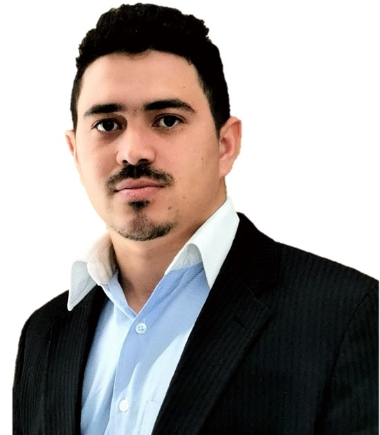

DevOps Engineer / SRE
Lisbon, Portugal
Electronic Engineering graduate with 5+ years of experience specializing in DevOps, Site Reliability Engineering, and cloud-native infrastructure. I build and operate large-scale Kubernetes platforms on AWS and GCP, design CI/CD pipelines, and help teams ship faster with confidence through GitOps, observability, and automation.
Expertise
Cloud
Containers
IaC & Automation
CI/CD & GitOps
Observability
Languages
Databases
Languages (spoken)
Career
Self-Employed — Banco Credibom
Self-Employed DevOps Engineer
Designed and maintained Kubernetes platforms (EKS and on-premises) with GitOps automation using ArgoCD. Built and optimized CI/CD pipelines and Helm charts to streamline application delivery. Managed infrastructure provisioning with Terraform integrated into Atlantis. Administered RDS databases, supporting upgrades, security patches, and performance tuning for SaaS workloads.
Self-Employed — Qiddiya Project
Self-Employed DevOps Engineer
Led implementation and maintenance of large-scale observability and tracing stacks in GCP using Prometheus, Google Managed Prometheus, Grafana, Tempo, and Loki. Automated infrastructure provisioning and upgrades with Terraform under a GitOps workflow. Participated in on-call rotations, incident response, and post-incident analysis.
JPMorgan Chase & Co.
Senior DevOps Engineer
Engineered and maintained an internal developer platform supporting a large-scale SaaS environment. Built and operated Kubernetes clusters (EKS/GKE on AWS and GCP), designed CI/CD pipelines, and automated deployments with GitOps. Contributed to infrastructure migrations, dependency upgrades, and observability improvements with Prometheus and Grafana.
Azion Technologies
Site Reliability Engineer (SRE)
Maintained reliability of globally distributed SaaS and edge platforms across cloud and bare-metal servers. Performed on-call duties, incident response, and post-incident reviews. Improved observability with Prometheus and Grafana. Automated infrastructure provisioning using Terraform and Puppet. Collaborated on CDN and networking operations.
Instituto de Pesquisas Eldorado
Software Developer & DevOps
Developed an All-in-One factory platform in Python and Docker deployed on ARM processors. Designed and delivered a self-managed Kubernetes operator for LG on AWS, automating monitoring stack deployments and integrating with AI-driven data analysis systems.
TV Globo
Telecom Support Technician
Ensured continuous uptime of mission-critical broadcast systems by monitoring and maintaining Linux servers, data networks, and satellite/DTV infrastructure. Performed scheduled maintenance, incident troubleshooting, and system upgrades for nationwide broadcasting.
Academic background
University of Brasília — UnB
Bachelor's Degree in Electronic Engineering
2013 – 2019
Technical School of Brasília — ETB
Electrotechnical Technician
2010 – 2012
Tell me about your goals. I'll reply within 1–2 business days.
or reach out on LinkedIn